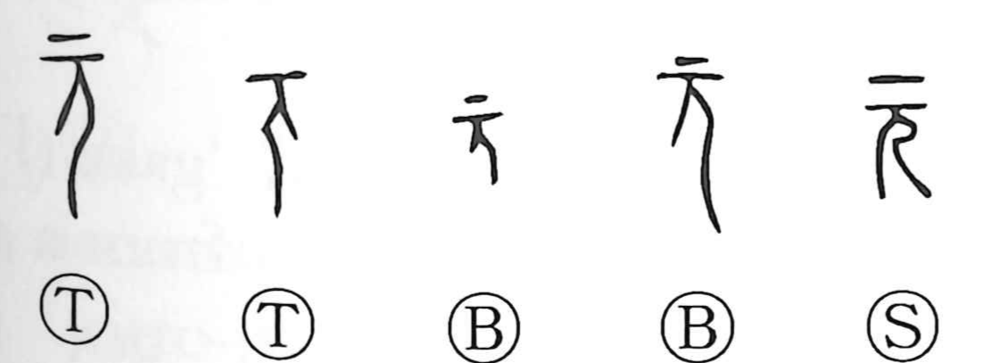

元

Kun: moto, kashira, hajime | On: gen, gan
origin ・ beginning ・ basis ・ head ・ chief
Explanation
In the earliest script, this character is a pictograph: an enlarged human head with the side view of a body (the person element) set beneath it, a drawing that emphatically foregrounds the head. From this focus it first means “head,” and by extension the “head” as leader or sovereign, as in 元首. Because the head is the highest part, the graph naturally came to mark what stands at the start or serves as the source: the beginning of time in 元日, and the fundamental basis in 根元. In usage it carries the senses kashira (leader), moto (basis), and hajime (beginning), and its on reading and sense sometimes overlap with those of 原 and 玄.